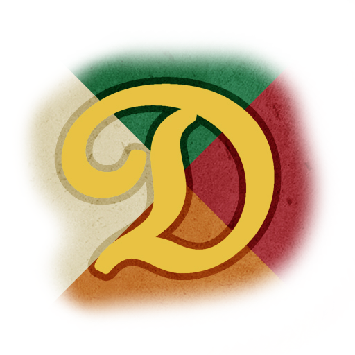
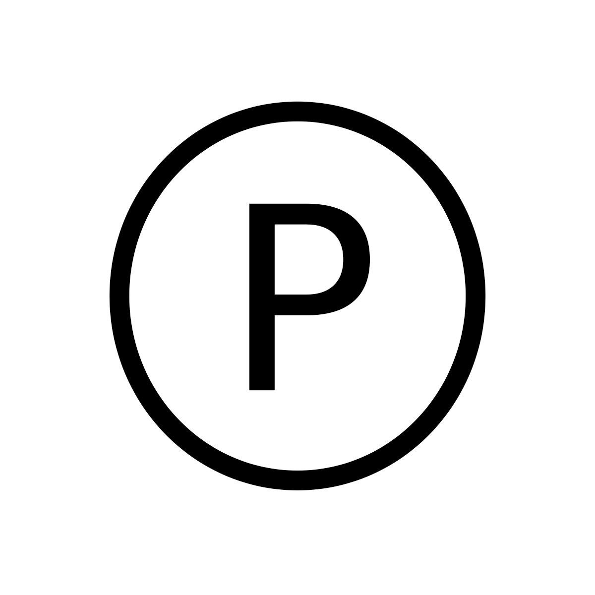
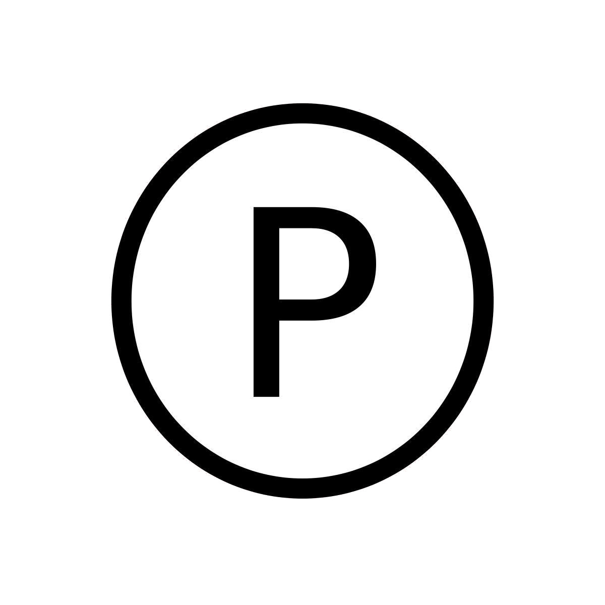

DRAGAKO
|  |  |  |
|---|
Punkte |
Beschreibung |
Nachweis |
|---|---|---|
2 |
FaRaFIN - Helferlein Meldet euch freiwillig als Helfer bei einem unserer Events |
Erscheinen & helfen |
5 |
FaRaFIN - Mitglied Ihr wollt den FaRaFIN aktiv unterstützen? Als Dank gibt’s Punkte für euer Haus |
Offizielle Aufnahme |
7 |
Fleißiges Vorbild Votiert in einer Übung mehr als 92% (mehrere Übungen möglich) |
Durch Übungsleiter |
20 |
Jahrgangsbeste Erreicht unter allen Teilnehmern die beste Durchschnittsnote (pro Semester). Freiwillige Angabe |
Screenshot eurer Notenübersicht am Anfang jedes Semesters (rückwirkend). Die Daten werden annonym behandelt |
10 |
Workshops halten Haltet einen Workshop o.ä. für Acagamics oder FaRaFIN |
Offizielle Einladung und Durchführung |
10-35 |
Programmierwettbewerb Der Programmierwettbewerb findet im Pflichtmodul AUD (Algorithmen & Datenstrukturen im 2. Semester) statt |
Offizielle Bekanntgabe |
5 |
Vereinsengagement Tretet einem studentischen Verein bei (Acagamics, Submit, etc.) |
Bestätigung durch Verein |
5-35 |
Wettkämpfe Gewinnt bei unseren übers Jahr verteilten Wettkämpfen |
Offizielle Bekanntgabe |
2 |
Klausurenarchiv Helft mit das Klausurenarchiv aktuell zu halten & reicht ein Gedächtnisprotokoll / eine Klausur ein |
Beim Einreichen / Hochladen identifizieren |
2 |
Dragakó-Evaluierung Nehmt an der Evaluierung am Ende des Semesters Teil & helft uns das Projekt zu verbessern |
Bei Abgabe des Evaluationsbogens |
1 |
Punkte-Punkte Ihr habt eine Idee, wofür wir noch Punkte vergeben könnten? Schreibt / sprecht uns an |
Vorschlag in Punkteübersicht aufgenommen |
1 |
Achievements In der App und bei unseren Veranstaltungen gibt es versteckte Achievements |
Wir geben euch Bescheid |
7 |
GameAward (Acagamics) Reicht ein Spiel für den jährlichen GameAward ein |
Offizielle Bekanntgabe |
2 |
GameJam (Acagamics) Nehmt an einem der zahlreichen GameJams von Acagamics Teil |
Bestätigung durch Acagamics |
5 |
Projekte/Spiele/Apps (Acagamics) Nehmt an fakultativen Veranstaltungen Teil & präsentiert euer "fertiges" Projekt |
Bestätigung durch Acagamics |
10 |
Sonderpunkte Besondere Unterstützung; häufiges Helfen; Entlastung der Orgateams (z.B. Design) |
Vorschlag durch Älteste, FaRaFIN oder Acagamics |
Punkte |
Beschreibung |
Nachweis |
|---|---|---|
20 |
Eventteilnahme Sorgt dafür, dass mehr als 60% eures Hauses an unseren Veranstaltungen teilnehmen |
Durch Teilnahmelisten oder App |
15 |
Hausversammlung Haltet eine geschlossene Versammlung eures Hauses ab (Orga-Sitzung, Wahl, etc.) |
Protokoll |
10 |
Gruppenevents Veranstaltet Grillparties, LANs, Spiele- oder Kneipenabende, etc. |
Gruppenfoto während der Veranstaltung |
10-25 |
Häuserkampf "Bestreitet ein Duell mit einem anderen Haus (Sport, Quiz, Zocken, etc.) |
Offizielle Ankündigung & Auswertung eurerseits |
20-40 |
Bonuspunkte Für besonderes Engagement oder innovative Ideen / Projekte verteilen wir Bonuspunkte |
Demokr. Abstimmung und Bewertung durch die "Ältesten" |
10-20 |
Einführungsveranstaltung Bei der Einführungsveranstaltung werden einige Spiele gespielt, wo die Häuser gegeneinander antreten |
Spielleiter werten aus |